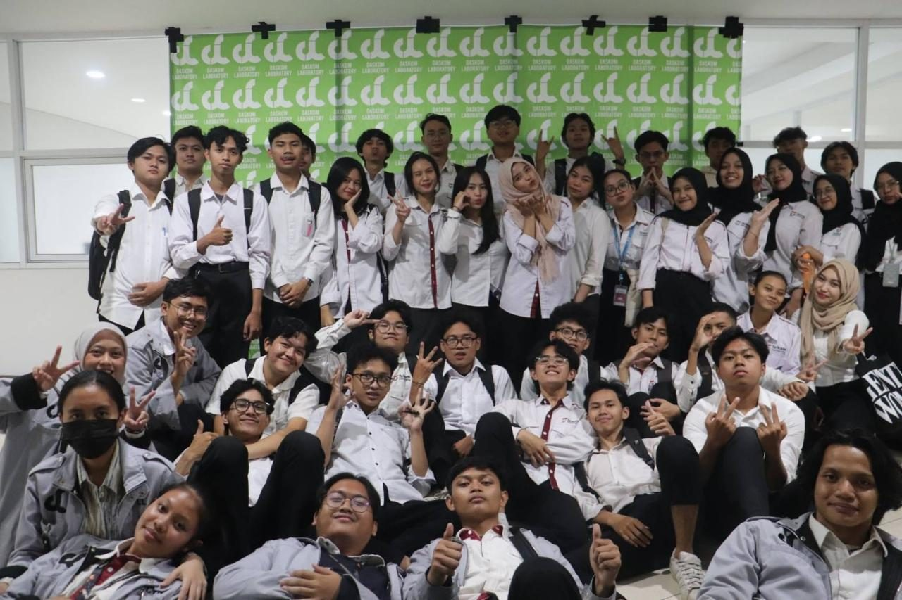
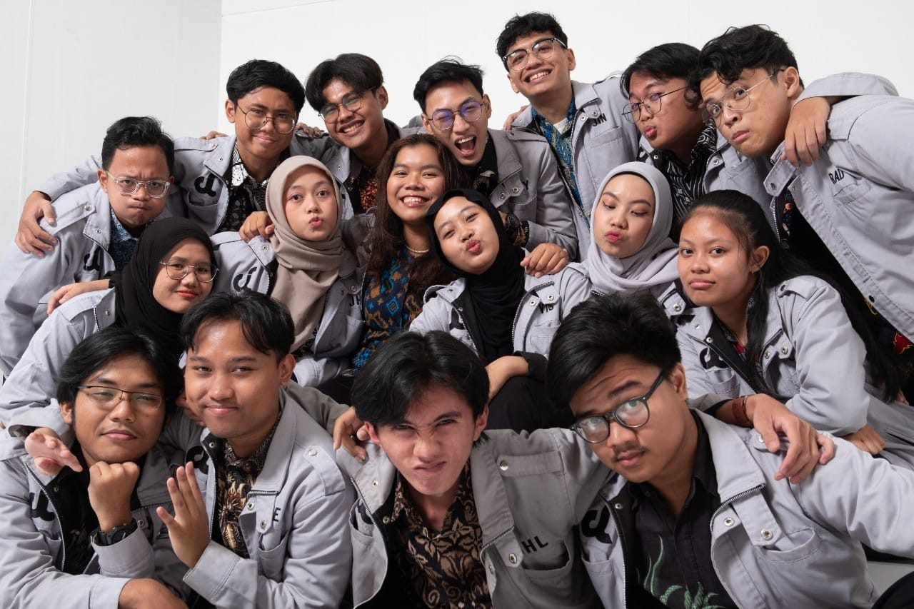

Work Experience
Teaching Assistant — C Programming


About Basic Computing Laboratory
Basic Computing Laboratory (Laboratorium Dasar Komputer) is a practicum laboratory under the School of Electrical Engineering, Telkom University. It provides basic algorithm and C programming practicums for students in Electrical Engineering, Engineering Physics, Telecommunication Engineering, and Biomedical Engineering.
What I did
- Taught C programming fundamentals and debugging to more than 200 students in laboratory practicals, working alongside 92 fellow assistants.
- Selected as an assistant through the Kost-In C application project.
- Served on the Rules and Discipline Committee, enforcing practicum rules and leading practicum shifts to keep them orderly and up to lab standards.
Practicum modules
- Module 1 — IDE Installation and Introduction to Algorithms
- Module 2 — Data Types and Algorithm Components
- Module 3 — Branching
- Module 4 — Looping
- Module 5 — Functions
- Module 6 — Arrays
- Module 7 — Sorting
- Module 8 — Searching
- Module 9 — Recursive Algorithms
- Module 10 — File Handling
- Module 11 — Basic Technical Report Writing